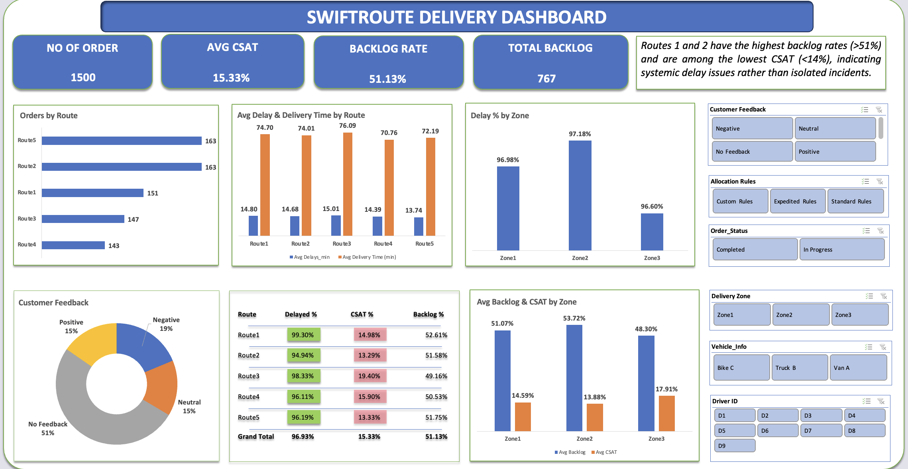

Optimising Order Fulfilment
Client: SwiftRoute Logistics Ltd. | Industry: Logistics & Supply Chain | Tool: Microsoft Excel
An Excel dashboard identifying the root causes of growing order backlogs and declining customer satisfaction across a UK-wide delivery network.

1. Business Problem
SwiftRoute Logistics Ltd., a Manchester-based logistics company with over twenty years of experience in nationwide last-mile delivery, was experiencing a deterioration in performance as order volumes increased. Backlogs were growing, delivery times were becoming inconsistent, and customer complaints were rising — but without centralised performance tracking, management could not pinpoint where the problems were concentrated.
The analysis was commissioned to answer three operational questions:
- Which routes and zones are generating the most backlogs and delays?
- Where is customer satisfaction lowest, and why?
- What operational changes would have the greatest impact on delivery performance?
2. Data Overview
- Order Data: Order ID, Route, Delivery Zone, Order Status
- Delivery Metrics: Delivery Time, Delay Duration
- Operations Data: Driver ID, Vehicle Type, Allocation Rules
- Customer Feedback: Positive, Neutral, Negative, No Feedback
GDPR Note: Driver IDs were used for operational analysis only and were not linked to personal identifiers in outputs. Customer feedback was handled in aggregate — no individual records were surfaced in the dashboard.
3. Data Cleaning & Preparation
What Was Removed
- Duplicate order entries identified across route and zone records
- Orders with missing delivery time and zone data that could not be reliably imputed
What Was Transformed
- Route and zone labels standardised for consistent grouping across all pivot analyses
- Order status categorised into: Delivered On Time, Delayed, and Backlogged
- Customer feedback recoded into four clean categories: Positive, Neutral, Negative, No Feedback
New Calculated Fields Created
- Backlog Flag: Binary field marking orders that exceeded expected fulfilment windows
- Backlog Rate: Backlogged orders ÷ total orders per route or zone
- CSAT Percentage: Positive feedback ÷ total feedback-providing orders
- Average Delay Duration: Mean delay in hours per route and zone
4. Data Analysis
Key KPIs Tracked
- Total Orders processed across the network
- Backlog Rate by route and zone
- Average Customer Satisfaction (CSAT) score
- Total Backlog Volume
Key Trends & Patterns
- Routes 1 and 2 recorded backlog rates above 51% — more than half of all orders were not fulfilled on time.
- Zone 2 had the highest delay percentage and backlog rate across the entire network.
- Route 5 displayed a counterintuitive pattern: one of the lowest average delays, yet among the lowest CSAT scores — satisfaction is not purely driven by delay duration.
- Only approximately 15% of deliveries received positive customer feedback, with over half generating no feedback at all.
Insights
- Routes 1 and 2 have a systemic problem, not an isolated one. Backlog rates above 50% indicate a structural issue — likely driver allocation, vehicle capacity, or route sequencing — rather than occasional failures.
- Zone 2 is the network's highest-risk area. Its combination of high delay percentage and high backlog rate makes it the single most impactful intervention point.
- Low CSAT on Route 5 despite low delays suggests an expectation gap. Delay reduction alone will not resolve satisfaction on this route — communication, packaging, or handover experience may be the root cause.
- The 55%+ no-feedback rate is both a data gap and an opportunity. Without feedback, the business cannot identify dissatisfied customers before they churn.
5. Recommendations
- Prioritise Zone 2 for immediate routing and resource reallocation, with a dedicated operational review of driver assignments and order volumes.
- Investigate Routes 1 and 2 for structural bottlenecks — specifically whether order volumes exceed realistic route capacity.
- For Route 5, conduct targeted qualitative research into the customer experience beyond delivery timing — including communication quality and handover procedure.
- Implement a post-delivery feedback mechanism to close the engagement gap and improve the quality of future analysis.
6. Limitations
- The dataset is drawn from a simulated environment and does not account for variables such as traffic patterns, weather events, or seasonal demand spikes.
- Driver performance is analysed at aggregate level only — individual driver data would enable more targeted operational decisions.
- The absence of cost data means financial impact projections are estimated rather than modelled from actuals.
- Customer feedback is sparse and potentially unrepresentative — the 55% no-feedback rate means CSAT scores reflect a self-selected minority.
Business Impact
Routing optimisation targeting Zone 2 and Routes 1 and 2 is projected to reduce order backlogs by 20–30%, decrease expedited delivery costs, and improve on-time delivery rates across the network. Closing the feedback gap would give management the customer intelligence needed to drive CSAT improvement beyond what operational changes alone can achieve.
Skills Demonstrated
Excel Data Modelling • Pivot Tables • KPI Design • CSAT & Backlog Analysis • Dashboard Design • Operational Analytics • Business Storytelling